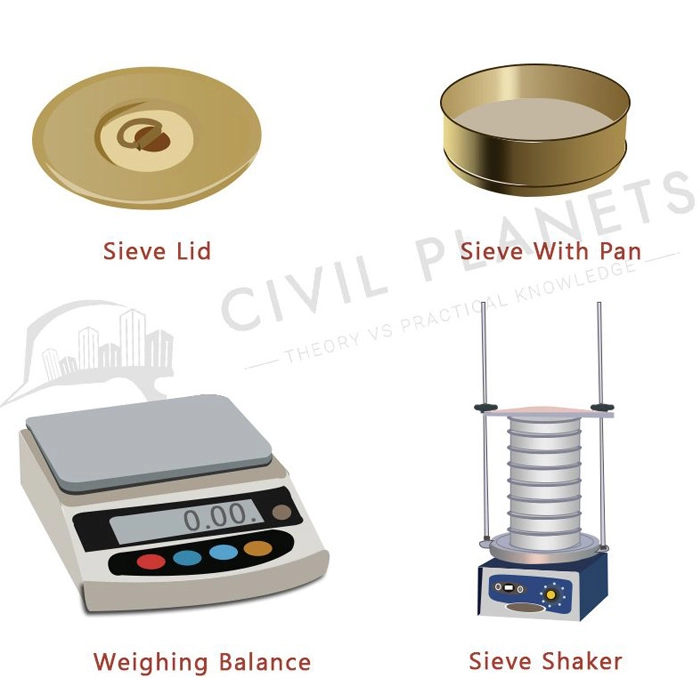

Objective:
Sieve analysis and fineness modulus of coarse aggregate.
Theory:
Sieve analysis is a method used to determine the particle size distribution of a granular material. This process is essential in various fields, including construction and civil engineering, to ensure that the aggregate used meets the required specifications.
Appartus Required:
IS sieve for Coarse aggregates - 25mm, 20mm, 12.5mm, 10mm, 4.75mm. Weighing Balance Pan 
Procedure:
Take a representative sample of coarse aggregate. The sample should be dried to a constant weight at a temperature of 110 ± 5°C. Weigh the dried sample accurately Arrange a set of IS sieves in descending order of size. Place the sample on the top sieve and cover it with a lid. Use a mechanical sieve shaker to shake the sieves for about 10 minutes. After sieving, weigh the material retained on each sieve. Calculate the percentage of the total sample weight retained on each sieve. This is done by dividing the weight retained on each sieve by the total sample weight and multiplying by 100 Plot the particle size distribution on a semi-logarithmic graph Weigh the dried sample accurately Weigh the dried sample accurately Weigh the dried sample accurately